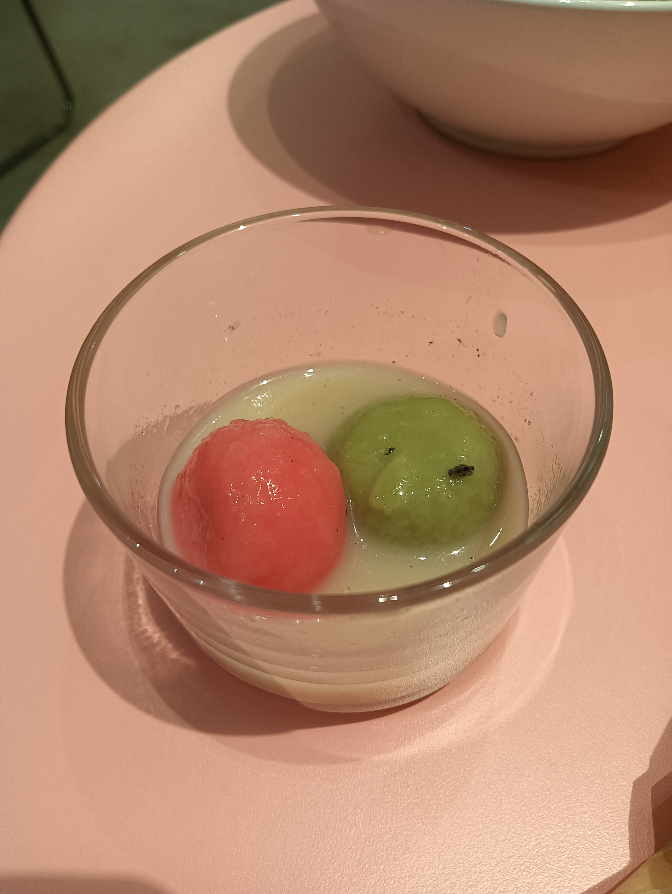

CHAPTER 01
一切的開始
沒想到我那個爛透的邀請會造成這麼大的影響，哪個男生會約女生去農民市集啦!還是喜歡的女生!這個是我第一次報備 我很開心的跟你說我在吃湯圓 哈哈

CHAPTER 02
跨年
第一次一起出去跨年然後來去漁港玩吃宵夜!永遠會記得這次
給妳的話
親愛的，謝謝妳出現在我的生命中。
這座網頁只是我們故事的一個縮影，
謝謝妳在我的生命中讓我知道怎麼去照顧一個人，讓自己慢下來觀察我愛的人，讓我知道我不是一個人在生活
未來的每一天，我都會繼續為這座屋子添磚加瓦。
未來希望我們都可以陪在對方身邊